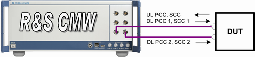
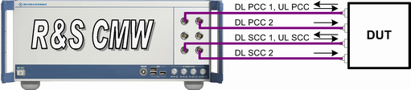

The carrier aggregation (CA) scenarios allow you to establish a Release-10 connection with several component carriers. A carrier can be a primary component carrier (PCC) or a secondary component carrier (SCC).
Independent of the scenario, there is always one UL PCC and one DL PCC. For a CA scenario, there is at least one additional DL SCC. You can also enable additional UL SCCs.
Depending on the scenario, a downlink carrier can have one output path (SISO) or two output paths (for example MIMO nx2). In total, up to four output paths per carrier are supported. As always for MIMO, the output paths of a carrier must use different TX modules and different RF connectors.
Over all carriers, all input paths must use different RX modules and different RF connectors. With co-location, you can let two carriers share TX modules. Without co-location, all output paths must use different TX modules. See also "RF Paths and Co-Location".
With an advanced frontend, you can route two output paths to the same connector. This feature allows you to choose the optimum test setup depending on the number of antenna connectors of your UE. There is no need for external combiners.
The following example setup is suitable for CA with four downlinks and a UE with only two antenna connectors. There are two PCC downlinks (MIMO), two SCC downlinks (one MIMO SCC or two SISO SCCs), one PCC uplink and one SCC uplink.
RF 1 COM is used for the uplinks, the first PCC downlink and the first SCC downlink. RF 3 COM is used for the second PCC downlink and the second SCC downlink.

For a UE with four antenna connectors, the following test setup could be used instead. Each downlink signal is now routed to a different connector.

For CA with one uplink and two downlinks, you could, for example, use only RF 1 COM (uplink, PCC downlink and SCC downlink). Or you could use RF 1 COM (uplink and PCC downlink) and RF 3 COM (SCC downlink).